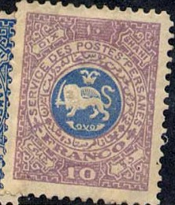
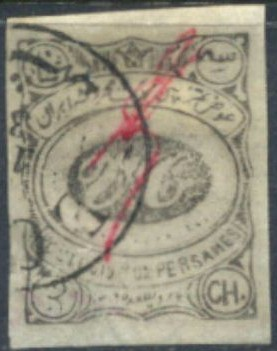
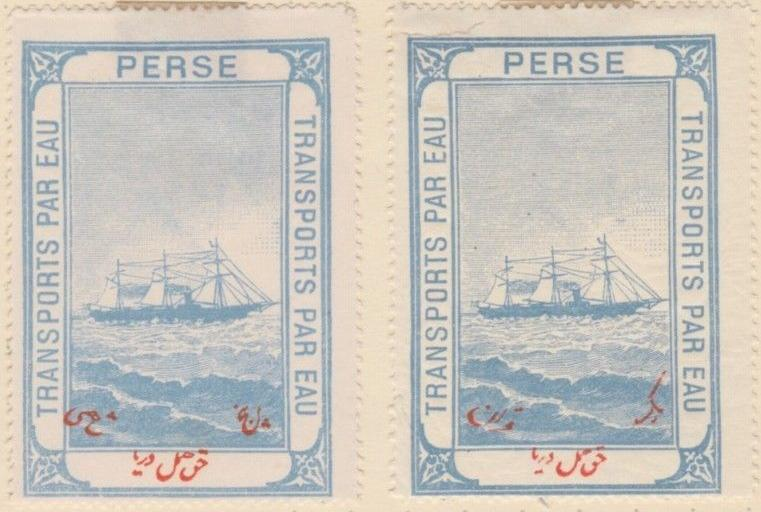

(Reduced sizes)
Return To Catalogue - 1870-1893 issues
Note: on my website many of the
pictures can not be seen! They are of course present in the
catalogue;
contact me if you want to purchase the catalogue.

(Reduced sizes)
The following values seem to exist: 1 c red and green, 2 c green and red, 5 c blue and orange and 10 c lilac and blue. They were supposed to have been issued in 1881.
Poste Locale Teheran', local issues for Teheran (1897):
(Reduced sizes)
2 ch brown and orange 2 ch brown and green 2 ch brown and red 2 ch brown and blue

Other non-issued postage due stamps? Inscription "PERSE A
PERCEVOIR". I've seen the values 1 Ch, 2 Ch, 5 Ch, 6 Ch, 10
Ch, 15 Ch, 1 Kr, 2 Kr, 5 Kr and 1 T (all in blue).
There also exists a stamp with inscription 'Poste Locale Tabriz' and arabic text issued in 1896 (sorry, no picture available yet).
Essay, lion in a star, surrounded by ornaments. I've also seen
this essay in the color orange.
(Cut from a postcard of 1877, inscription "UNION POSTAL
UNIVERSELLE CARTE POSTALE DE PERSE")
(Cut from an envelope of 1892)
Besides the 5 ch yellow, I have also seen the value 10 ch red.
By the way, I have seen stamps of India, used in Bushire from about 1880 to 1913 (Queen Victoria and King Edward VII).
1 ch black 2 ch grey 3 ch grey 5 ch black 5 ch violet 12 ch blue 1 K red
The stamps are in general in a bad condition; the stamps were issued by the Belgian postmaster of Meshed, Victor Castaigne (that's where the initials V.C come from), during a lack of ordinary stamps.
Value of the stamps |
|||
vc = very common c = common * = not so common ** = uncommon |
*** = very uncommon R = rare RR = very rare RRR = extremely rare |
||
| Value | Unused | Used | Remarks |
| 1 ch | RR | RR | Exists with inverted center: RRR |
| 2 ch | RR | RR | |
| 3 ch | RR | RR | |
| 5 ch black | RR | R | Exists with inverted center: RRR |
| 5 ch violet | RR | R | |
| 12 ch | RR | RR | Exists with inverted center: RRR |
| 1 K | RRR | RR | |

With inverted center, certified genuine.
Postal stationery in the same design also seems to exist.
Reprints exist, the so-called 'European printing'.
Forgeries, examples:
(Reduced sizes)

Forgery made by photo lithography, possibly made by Mirza Hadi in Paris (according to the
certificate of Mehrdad Sadri)

Forgery with inverted center.
More information on forgeries of these stamps can be found on: http://www.persi.com/fakes/fakes/f222.htm (link no longer available).
Literature:
G. Karman, Meched Stamps According to Karman (1997), 154 pages,
(only 100 copies issued however....). See
http://gerard.karman.nl/ for more information.
The following stamp is an unissued stamp, it has the inscription "POSTES PERSANES POSTE LOCALE", I've also seen it imperforate.

(Probably genuine, recently sold on E-bay)
Forgeries also exist, example:

10 c brown (blue text); for land transport 5 c blue (red text); for transport over water 1 K blue (red text); for transport over water

Some fiscal stamps most likely issued after 1915.


{kind=link}
{kind=link}